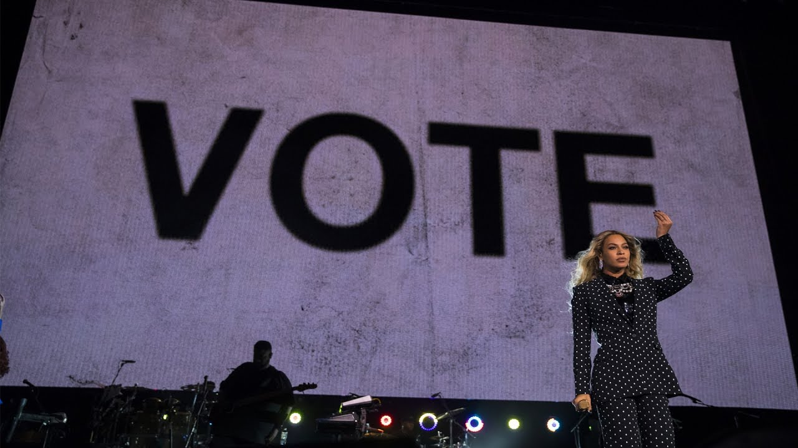
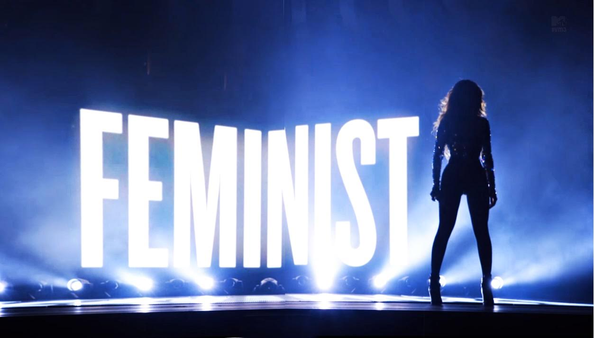
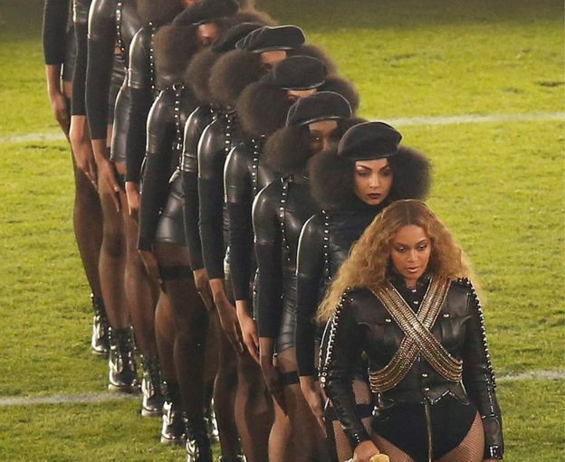

<html>
<head>
  <link href="stylesheet.css" type="text/css" rel="stylesheet">
  <link href="https://fonts.googleapis.com/css?family=Anton" rel="stylesheet">
<link href="https://fonts.googleapis.com/css?family=Archivo+Narrow|Oswald" rel="stylesheet">
  </head>
  </html>
  <div class="pcgrid">
  <div class="pchead">
  <center> Politics </center>
  <div class="topnav">
  <a href="index.html">Home</a>
  <a href="Production.html">Production</a>
  <a href="VC.html">Vocal and Choreography</a>
  <a class="active" href="Politics.html">Politics</a>
  <a href="CTP.html">Contemporaries</a>
  <a href="CTA.html">Call to Action</a>
</div>
</div>
<div class="pctitle">
<p> Beyonce is not afraid to share messages through her performances. Beyonce
encourages voting at Tidal X in New York City, 2016. "Doing nothing right now is
not an option." Beyonce says. </p>
</div>
<div class="pcimga">

</div>
<div class="pcimgb">

</div>
<div class="pctitle2">
<p>Beyonce has shown multiple times through her performances that the she is a strong supporter of feminism. 
In one of Beyonce’s song, ‘Flawless’, had a spoken word interlude by Chimamanda Ngozi Adichie, a well known
 Nigerian feminist. The interlude expresses the changes in how we as a society should treat and teach young females.</p>
</div>
<div class="pctitle3">
<p>At the 2016 Super bowl Beyonce performed alongside Bruno Mars and Coldplay. During her portion of the
performance she and her backup dancers dressed up as black panthers to spread a message against police brutality.
The song she performed was ‘Formation’ a song encouraging black americans to take pride in their own physical 
features and qualities.    
</p>
</div>
<div class="pcimgc">

</div>
</div>